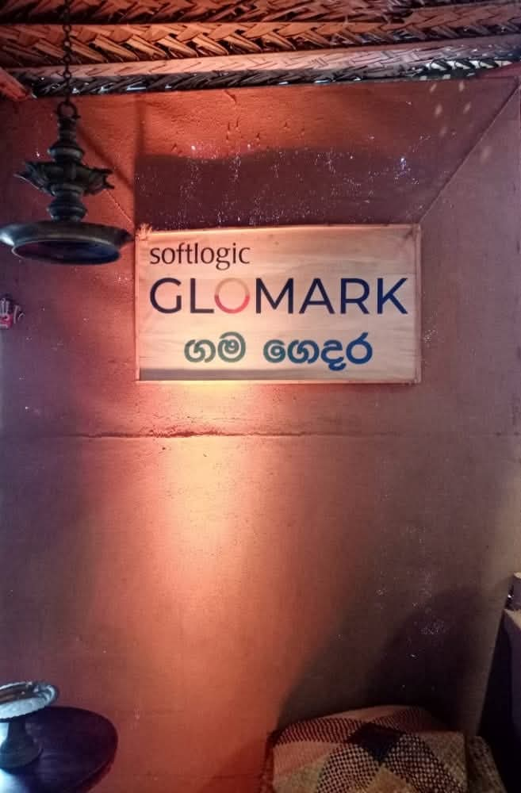
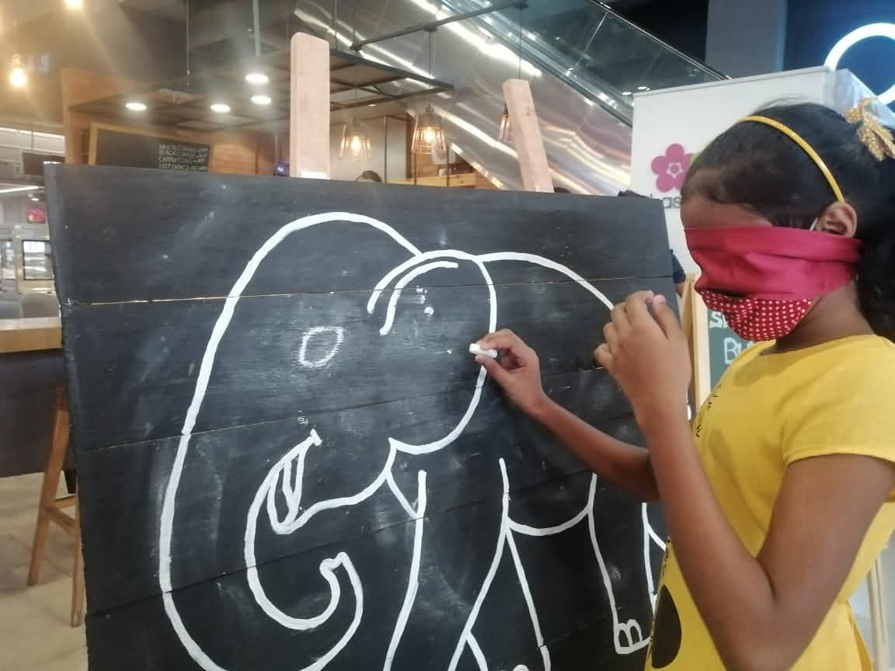
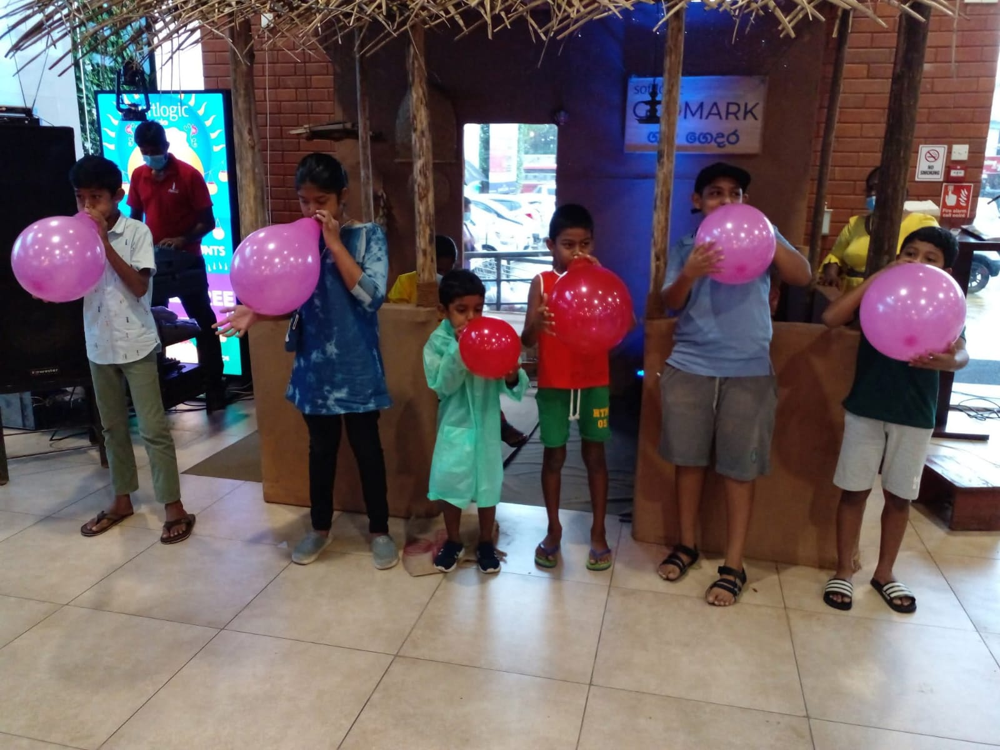
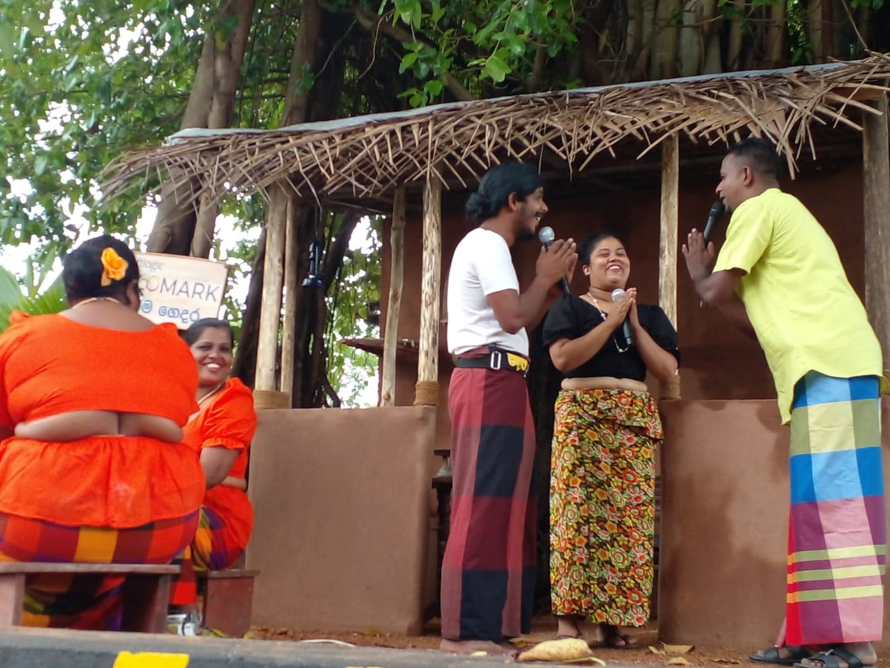
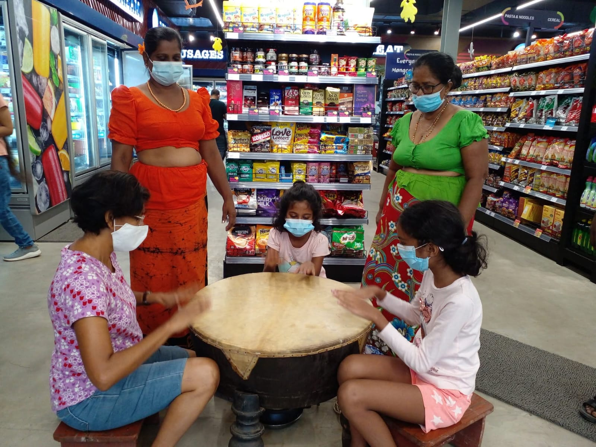

RNC Media Solutions worked with Softlogic GLOMARK to create the experiential "Glorious Avurudu" holiday activation.
We transformed the store into a contemporary version of a Sri Lankan "Gama" village, combining live character interactions, cultural games and immersive event zones. The activation was designed to feel authentic, family-friendly and highly shareable.
Glomark needed a standout seasonal campaign that would increase foot traffic, deepen customer engagement and reinforce the brand’s connection to local traditions.
We delivered the concept, production and character management for the activation. Our team handled event planning, creative direction and on-site coordination so visitors experienced a seamless and emotionally resonant journey through the campaign.
As part of the activation, we served customers traditional Avurudu sweets such as kavum, kokis and aluwa, helping to reinforce the festive mood and create a warm, nostalgic connection to the holiday.
Softlogic GLOMARK
Glorious Avurudu Activation
Concept, Event Production, Character Management